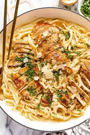

Chicken Alfredo Pasta Recipe

Ingredients
- 2 chicken breasts (sliced into strips)
- 250g fettuccine or any pasta
- 2 tablespoons olive oil
- 3 cloves garlic (minced)
- 1 cup heavy cream
- 1 cup grated Parmesan cheese
- Salt and pepper to taste
- Chopped parsley for garnish (optional)
Instructions
- Boil pasta in salted water according to package instructions. Drain and set aside.
- Heat olive oil in a pan over medium heat. Add chicken, season with salt and pepper, and cook until golden and cooked through. Remove and set aside.
- In the same pan, sauté garlic until fragrant (about 30 seconds).
- Pour in the heavy cream and bring to a simmer.
- Stir in Parmesan cheese and mix until smooth and creamy.
- Return cooked chicken to the pan and combine with the sauce.
- Add the cooked pasta and toss until well coated with the Alfredo sauce.
- Garnish with chopped parsley if desired. Serve hot!